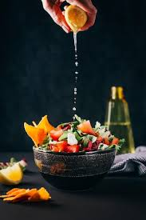

Fresh Garden Salad

Ingredients
- 2 cups mixed greens (lettuce, spinach, arugula)
- 1/2 cup cherry tomatoes, halved
- 1/4 cup sliced cucumbers
- 1/4 cup shredded carrots
- 1/4 cup sliced red onion
- 1/4 cup feta cheese (optional)
- 2 tablespoons olive oil
- 1 tablespoon balsamic vinegar
- Salt and pepper to taste
Instructions
- Wash and dry all vegetables.
- Chop the lettuce, slice the cucumbers, tomatoes, and onions.
- In a large bowl, combine all the vegetables.
- Drizzle olive oil and balsamic vinegar over the salad.
- Toss gently to mix everything together.
- Season with salt and pepper.
- Top with feta cheese if desired and serve fresh!
⬅ Back to Home